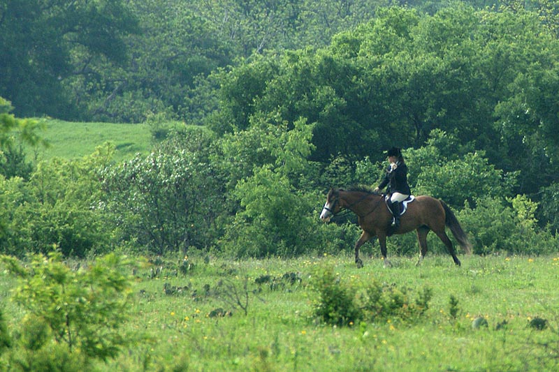

Mary Ann and Shorty heading out to the South.
Gathering at the hound trailer.
Hounds spread out and working.
Dog hounds working their way along the creek.
Cactus is scattered throughout the green carpet of grass.
Laura and Katie following the huntsman.
Crossing the creek bed and working their way downstream.
Keeping the hounds in sight.
The flowers everywhere were enjoyed by the riders.
Moving on a bit.
Catching site of the quarry.
David and Ketel.
David and Chris watching from the East.
Hounds struck and started speaking in the creek bed.
Jumping a ditch or two.
Skirting the creek bed to drop down in.
Katie and Bella.
Laura and Slim.
Katie navigating a ditch and bank.
Calling the hounds back on the other side of the creek.
Moving on again.
Heading towards the dam.
Aver watching for hounds and Thuy watching the photographer.

Enjoying the day.
Enjoying the day.
Coming out of the woods.
The day was warming up.
Bella at a check.

Watering the hounds and horses.
Ready to move off again.
Considering the options.
To the Northeast this time.
Thick grass everywhere is a nice change from last year.
Full water crossings are also a welcome sight.
Making their way across.
Hard to believe we're in Texas.
This is what the photographer usually has to deal with. Today was an ideal day for pictures. (That's a rare glimpse of Mary Ann in the distance and Melanie working through the trees.)
Noses to the ground and working.
Working their way in.

Still checking for scent.
Keeping with the huntsman.
Chris watching the hounds.

Dave following behind.
Aver and Mary Ann making their way in.
Thuy worked fine for Aver.
Shorty got a little lonely, but stayed aware of where the hounds were working.